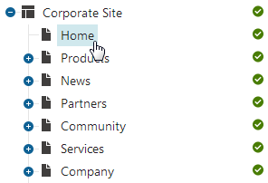
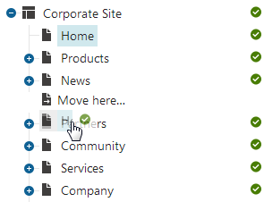
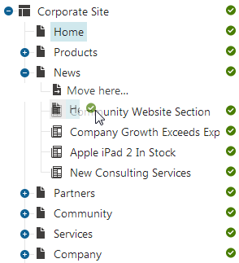
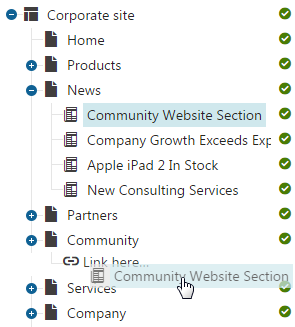
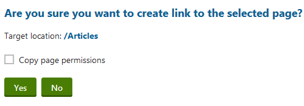

Copy of Copying and moving pages, creating linked pages
You can perform the copy, move and create linked page operations with pages quickly by dragging and dropping in the content tree.
Copying and moving pages in the Pages application
Open the Pages application.
Depending on the operation that you want to perform, you may need to hold one of the following buttons:
Move - drag and drop only
Copy - hold CTRL while performing drag and drop
Create linked page - hold CTRL+SHIFT while performing drag and drop
In the Content tree, select the page that you want to move.
Move the mouse to the target location while still holding down the mouse button.
Tip: If you drag the page a bit to the right, the page is placed under the page above it.

Release the mouse button.
The system moves the page to the chosen location.
Creating linked pages in the Pages application
Linked pages represent a link pointing to another page in the content tree. These links do not store any content by themselves but they have their own configuration for certain properties tabs.
Linking is only supported on Portal Engine sites and is not available for content-only (MVC) pages.
Copying vs. linking pages
When you create a copy of a page, the new page behaves as an independent page. This means that if you edit the copied page, the original page is not affected.
If you want the copied page to reflect changes made to the original, you need to create a linked page. The linked page is a virtual copy that exists in the new location, but its content is linked to the original page – changing the original means that the virtual copy changes as well, and vice versa.
Linking pages prerequisite
To create linked pages in the Pages application, your administrators first need to allow creating linked pages for the selected page type scope in the Page types application on the Scopes tab.
Linking a page
Open the Pages application.
In the content tree, press and hold CTRL + SHIFT, and drag the page you want to create a link for to the desired place in the content tree.
Tip: If you drag the page a bit to the right, the page is placed under the page above it.
Release the mouse button. The following confirmation dialog appears.
(Optional) Select Copy page permissions if you want the linked page to retain the same permissions as the original.
Click Yes.
The page is now linked. Any changes made to the original page will be reflected on the linked page as well, and vice versa.